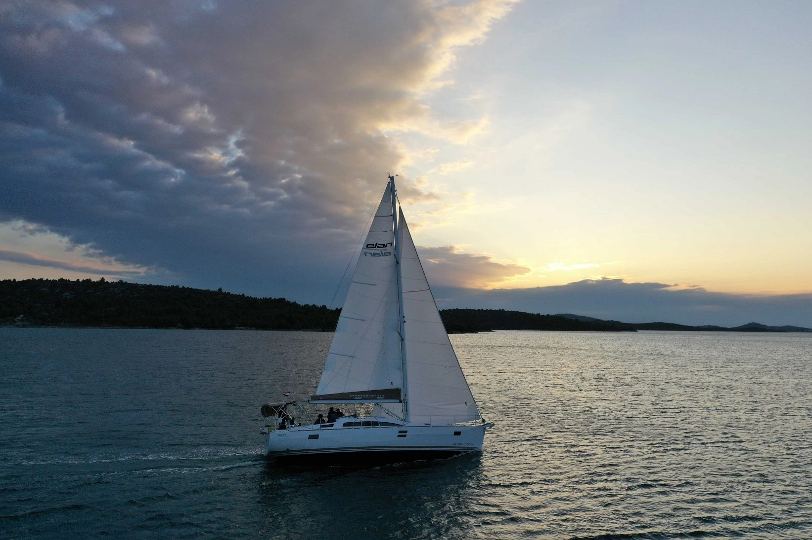
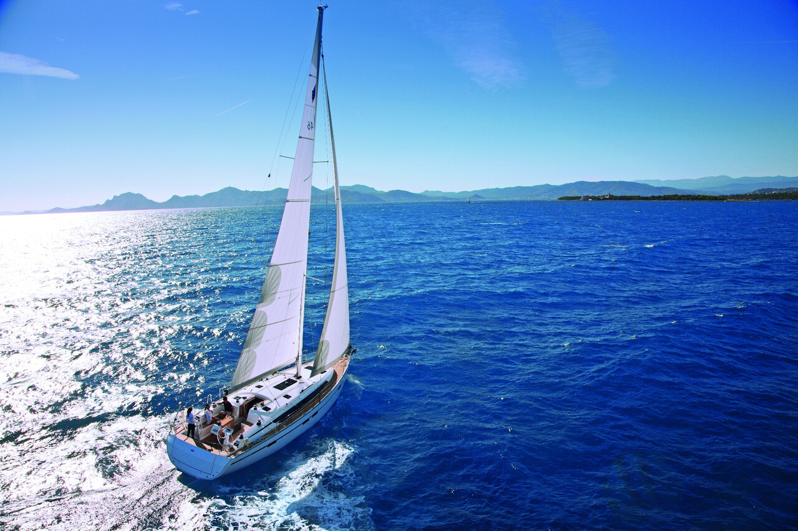
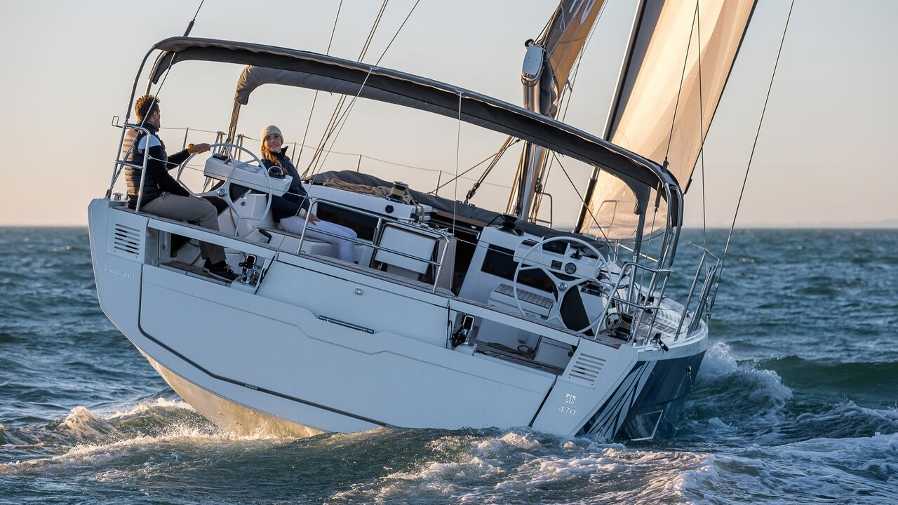
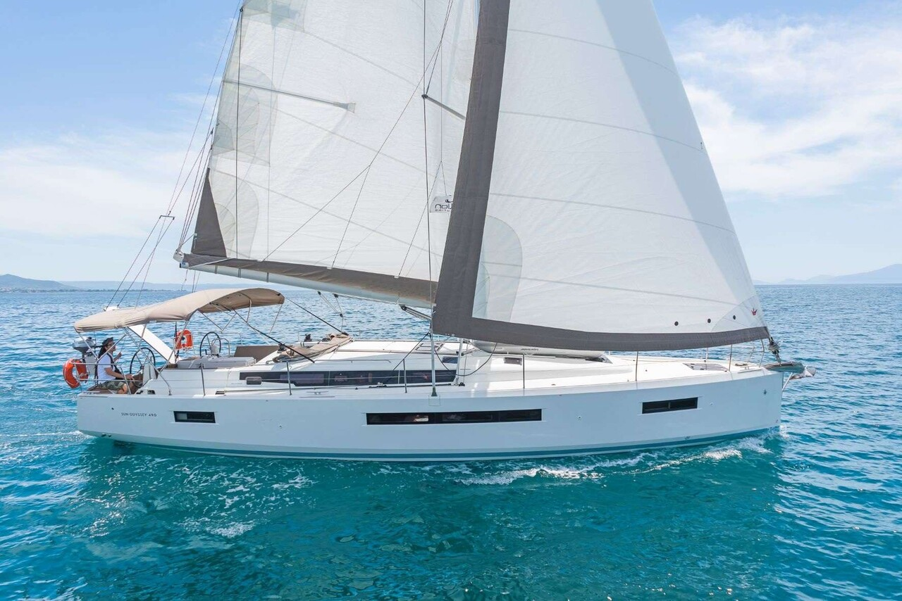

Обзор модели
Elan Impression 45.1
Инженерный обзор, ходовые качества, компоновка и эксплуатационные особенности.
Читать обзор →Пять моделей и два сравнительных исследования: конструкция, эксплуатация, сильные и слабые стороны. Разбираем яхту как техническую систему, а не как рекламную картинку.

Инженерный обзор, ходовые качества, компоновка и эксплуатационные особенности.
Читать обзор →
Пространство и практичность: особенности популярного семейного крейсера.
Читать обзор →
Корпус, парусная концепция, интерьер и эксплуатационные компромиссы.
Читать обзор →
Компоновка и эргономика французского крейсера.
Читать обзор →
Особенности палубы, управления и жилых пространств.
Читать обзор →Сравнение характеристик, хода, интерьеров и особенностей владения.
Читать сравнение →Сравнение конструкций, технических решений и эксплуатации океанских крейсеров.
Читать сравнение →Это архивные аналитические материалы, перенесённые из прежней версии сайта. Характеристики отдельных модификаций и оценочные утверждения нуждаются в предметной проверке. Обзоры не являются протоколами личных ходовых испытаний каждой из перечисленных моделей.